Micropython
Programación fácil y para todos de microcontroladores
Sobre mí Nekmo

Programador Python |
Otras charlas...



{kind=link}
Micropython
Microcontroladores
¿Qué son?
Ventajas
ü§è Peque√±os
ü§ë Econ√≥micos
ü™´ Bajo consumo
Desventajas
üê¢ Poco potentes
üòì Programaci√≥n más compleja
Algunos usos
☁️ Domótica
ü§ñ Rob√≥tica
üîå Electr√≥nica
üöß Prototipos
...
GIF robot
Micropython
Variantes
ESP8266/ESP32
ü§ë Muy econ√≥mico
üòÑ Múltiples variantes
üë• Gran comunidad
Raspberry Pi Pico
üí∏ Econ√≥mico
üî® Gran soporte
üìö Bien documentado
ESP32
Dinero
Características
üí™ Doble núcleo
üõú Conectividad WiFi
üì° Conectividad Bluetooth
üîå Múltiples pines GPIO
üìü ADC / DAC
Primeros pasos
⚡ Flashear siguiendo la web de Micropython
üìù IDE web (ViperIDE) o local (Thonny)
Demos
Encender un led
Identificar los pines

Conectar el led
Código led
Led analógico
GIF luces LED
Conectar un botón
Código botón
GIF recreativa
Conectar un LED RGB
Código LED RGB
GIF cientos de cables
Protocolos de comunicación
1️⃣ OneWire (1 pin)
2️⃣ I2C (2 pines)
3️⃣ SPI (3/4+ pines)
üìü UART (2+ pines)
Conectar un led WS2812
Código LED WS2812
I2C
Conectar sensor y pantalla I2C
Código sensor y pantalla I2C
WiFi y bluetooth
Código coche
Demo coche
¡Pruébalo tú mismo!
SSID: roverc.pro
Password: roverc.pro
Url: http://192.168.4.1
¡Muchas gracias a todos!
Recursos
üåê Web oficial: https://micropython.org
üìù Editor online: https://viper-ide.org
ü•Ω Simulador online: https://wokwi.com
QR

Python Málaga
üåê Sitio web: python-malaga.es.
ü§ù Meetup: meetup.com/Python-Malaga.
üê¶ Twitter: @python_malaga.
‚Äçüíº LinkedIn: linkedin.com/groups/13110576.
üì± Telegram: python_malaga.
Contactar
üåê Sitio web: nekmo.com
üì´ Email: contacto@nekmo.com
üê¶ Twitter: @nekmocom
üì± Telegram: @nekmo
üí° Jabber: nekmo@nekmo.org